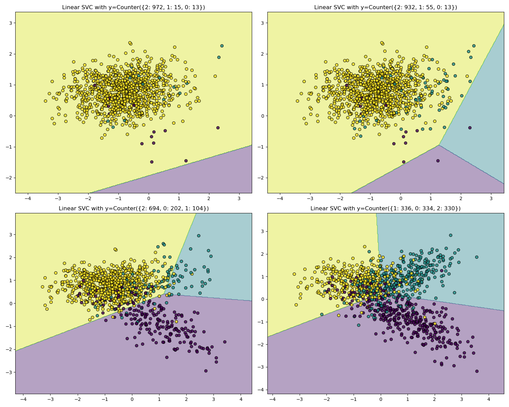

1. Introduction#
1.1. API’s of imbalanced-learn samplers#
The available samplers follows the scikit-learn API using the base estimator
and adding a sampling functionality through the sample method:
- Estimator
The base object, implements a
fitmethod to learn from data, either:estimator = obj.fit(data, targets)
- Resampler
To resample a data sets, each sampler implements:
data_resampled, targets_resampled = obj.fit_resample(data, targets)
Imbalanced-learn samplers accept the same inputs that in scikit-learn:
data:
targets:1-D
numpy.ndarray,
The output will be of the following type:
data_resampled:
targets_resampled:1-D
numpy.ndarray,
Pandas in/out
Unlike scikit-learn, imbalanced-learn provides support for pandas in/out. Therefore providing a dataframe, will output as well a dataframe.
Sparse input
For sparse input the data is converted to the Compressed Sparse Rows
representation (see scipy.sparse.csr_matrix) before being fed to the
sampler. To avoid unnecessary memory copies, it is recommended to choose the
CSR representation upstream.
1.2. Problem statement regarding imbalanced data sets#
The learning phase and the subsequent prediction of machine learning algorithms can be affected by the problem of imbalanced data set. The balancing issue corresponds to the difference of the number of samples in the different classes. We illustrate the effect of training a linear SVM classifier with different level of class balancing.
As expected, the decision function of the linear SVM varies greatly depending upon how imbalanced the data is. With a greater imbalanced ratio, the decision function favors the class with the larger number of samples, usually referred as the majority class.